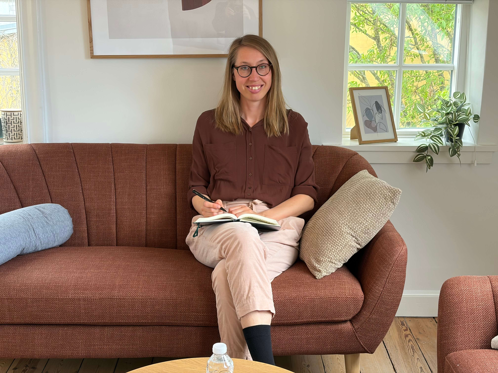
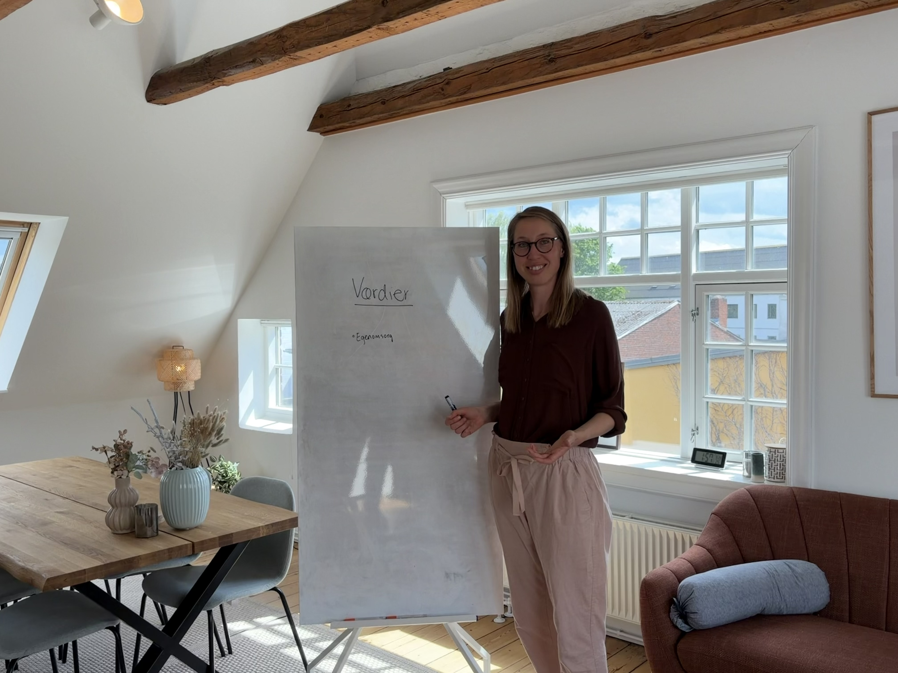
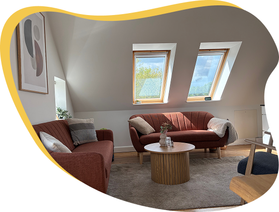

Korte Ventider
Jeg tilbyder psykologsamtaler med kort ventetid centralt i Roskilde. Lige nu kan du få første tid inden for få uger.
.jpg)
Hos mig er du velkommen, som du er. Med varme og empati skaber jeg et trygt rum, hvor vi sammen løser dine udfordringer.
Start med en gratis og uforpligtende forsamtale, og mærk om jeg er den rette til at hjælpe dig
BOOK FORSAMTALEJeg tilbyder psykologsamtaler med kort ventetid centralt i Roskilde. Lige nu kan du få første tid inden for få uger.
Terapiforløb tilpasset dig. Særligt fokus på unge voksne med lavt selvværd, tankemylder eller stress.
En praktisk og visuel terapiform med øvelser og brug af whiteboard. Lær at håndtere tankemylder og stress, så du genfinder roen.
Gennem vores samtaler støtter jeg dig i din udviklingsrejse og i at tage personligt lederskab over dit liv. Jeg tror på, at al meningsfuld forandring kommer indefra. Derfor har vi fokus på, at styrke din forbindelse indadtil, så du bedre kan mærke, hvad der er rigtigt og meningsfuldt for dig.
Jeg modtager løbende supervision og faglig sparring på mit arbejde, hvilket er med til at sikre et højt fagligt niveau. Jeg er underlagt reglerne om tavshedspligt og arbejder under de Etiske Principper For Nordiske Psykologer.


Det første skridt mod forandring skal være så nemt og trygt som muligt. Derfor tilbyder jeg altid en gratis og uforpligtende telefonisk forsamtale, så du kan mærke efter, om jeg er den rette psykolog for dig.
Du finder blot en tid i kalenderen, der passer dig, og så ringer jeg dig op. På den måde slipper du for at ringe forgæves eller sidde i kø på telefonen, og vi kan i ro og mag tage en indledende snak om, hvad du har brug for hjælp til.

Når du træder ind i min klinik i hjertet af Roskilde, er målet at skabe et rum, hvor du med det samme mærker ro, varme og tryghed. Her er der plads til at smide facaden.
Vores individuelle samtaler tager altid udgangspunkt i din helt unikke situation, dine værdier og de konkrete udfordringer, du møder i din hverdag. Du bliver lyttet til og mødt præcis dér, hvor du er – uanset om det handler om lavt selvværd, stress, overvældelse eller de store transformationer i livet.

I terapien arbejder vi målrettet med at give dig konkrete redskaber til at håndtere det, der tynger. Jeg tager primært udgangspunkt i ACT (Acceptance and Commitment Therapy).
For at gøre de psykologiske mekanismer håndgribelige og overskuelige, bruger jeg ofte min tavlen til at visualisere dine tanker, mønstre og personlige værdier. Det visuelle arbejde på tavlen hjælper dig med at skabe overblik over dit tankemylder eller svære følelser, så du kan finde ro og skabe en holdbar, meningsfuld forandring i dit liv.
"Forløbet med Amalie har givet mig nye perspektiver på mit moderskab og mit liv i det hele taget. Jeg har fået en større selvindsigt og mere ro i mit liv generelt. Ved første mødegang var jeg meget stresset, men da forløbet sluttede, var jeg kommet rigtig meget ned i gear, og det tror jeg ikke er noget tilfælde. Amalie har hjulpet mig med at mærke efter, og udfordret mig på mine overbevisninger. Altsammen på en kærlig og rummelig måde. Amalie får mine største anbefalinger!"
“Amalie er en dygtig og empatisk psykolog. Hos hende bliver du altid taget godt imod og lyttet til. Amalie har gennem et kort forløb formået at hjælpe mig på ret kurs ud af en stresssygemelding. Hun har hjulpet mig til at se mine udløsende faktorer til stressen samt hvordan jeg bedst håndtere og undgå at havne i lignede situationer.”
Det kan føles overvældende at række ud efter hjælp. Derfor tilbyder jeg altid en gratis og uforpligtende forsamtale på 15 minutter over telefonen, hvor jeg ringer dig op.
Det giver dig mulighed for at mærke efter, om jeg er den rette til at hjælpe dig videre.
Book forsamtale